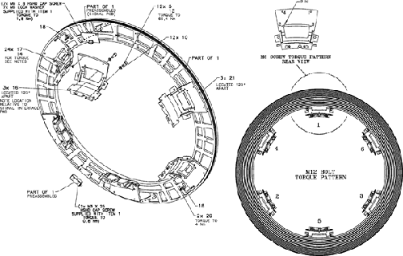

Media File 1: Full Size Illustration: Slipring Platter Torque Pattern

Start with the three (3) pinned cast mounting brackets.
| NOTE: | For a larger version of this illustration, click on the PDF icon below. |
Media File 1: Full Size Illustration: Slipring Platter Torque Pattern

Illustration 2: Slipring Platter Torque Pattern
